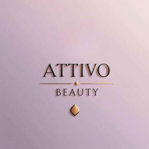

Trade Mark Journal No.2025/025 20 June 2025
UK00004213997 4 June 2025 (3)

- Class 3
- Skincare cosmetics; Beauty lotions; Beauty serums; Beauty care cosmetics; Cosmetic products in the form of aerosols for skincare; Beauty creams; Beauty serums with anti-ageing properties; Anti-aging moisturizers used as cosmetics; Perfumery products; Anti-aging skincare preparations; Beauty balm creams; Moisturisers [cosmetics]; Beauty creams for body care; Cosmetic products in the form of aerosols for skin care; Skin moisturizers used as cosmetics; Beauty soap; Cosmetics; Suncare lotions [for cosmetic use]; Facial creams [cosmetics]; Beauty masks; Masks (Beauty -); Beauty gels; After-sun oils [cosmetics]; Skin care cosmetics; Skincare preparations; Beauty milks; Anti-aging creams [for cosmetic use]; Facial beauty masks; Body and facial creams [cosmetics]; Skin care lotions [cosmetic]; Beauty care preparations; Body creams [cosmetics]; Cosmetic moisturisers; Anti-ageing creams [for cosmetic use]; Skin masks [cosmetics]; Cleansing products for the eyes; Anti-ageing serums for cosmetic purposes; Facial moisturisers [cosmetic]; Cosmetics in the form of lotions; Skin balms [cosmetic]; Skin care creams [cosmetic]; Cosmetic creams for skin care; Skin cleansers [cosmetic]; Beauty milk; Skin recovery creams [cosmetics]; Skin care oils [cosmetic]; Moisturising skin lotions [cosmetic]; Anti-aging moisturizers; Self-tanning preparations [cosmetics]; Cosmetic nourishing creams; Body care cosmetics; Cosmetics in the form of creams; Acne cleansers, cosmetic; Cosmetic facial lotions; Facial lotions [cosmetic]; Anti-aging serum for cosmetic use; Non-medicated beauty preparations; Facial cleansers [cosmetic]; Facial gels [cosmetics]; Moisturising skin creams [cosmetic]; Cosmetic creams for the skin; Skin creams [cosmetic]; Skin creams [for cosmetic use]; Suncare lotions; Sun care lotions [for cosmetic use]; Cosmetics and cosmetic preparations; Body cleaning and beauty care preparations.
Hayley Jarvis